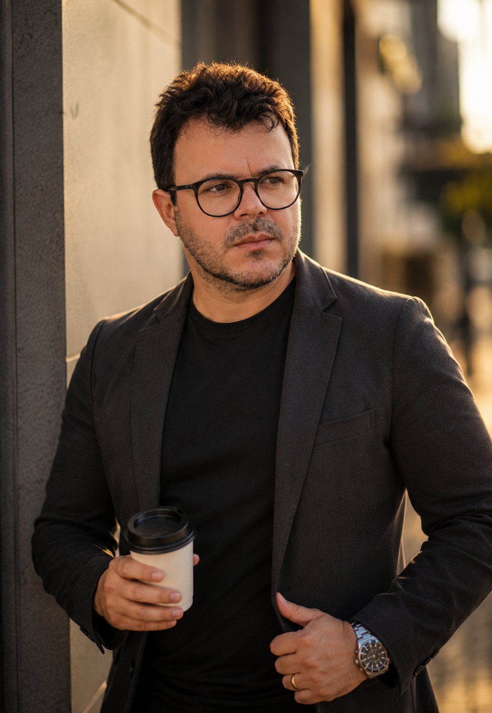

Trombonista, regente e arranjador com formação sólida e mais de duas décadas de experiência. Licenciado em Música pela UFCG e especialista em Artes e Música pela FAVENI.

Maestro · Arranjador · Trombonista
Arranjos para banda sinfônica, Banda Musical (filarmônica), big band, orquestra e formações de câmara.
Saiba maisDireção musical de bandas, filarmônicas, orquestras de frevo, Marciais e projetos especiais.
Saiba maisApresentações como trombonista solo e em formações instrumentais.
Saiba mais 🎓Aulas, oficinas e consultoria para músicos e instituições culturais.
Saiba maisAcredito na música como ferramenta de transformação social, desenvolvimento humano e fortalecimento da identidade cultural.— Laudemir Ramos